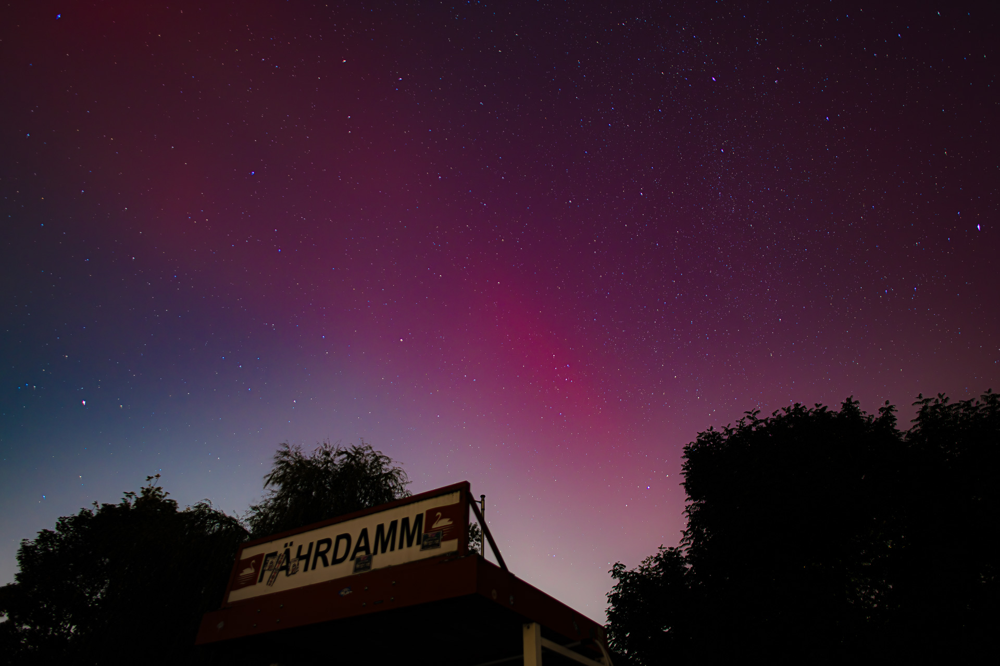
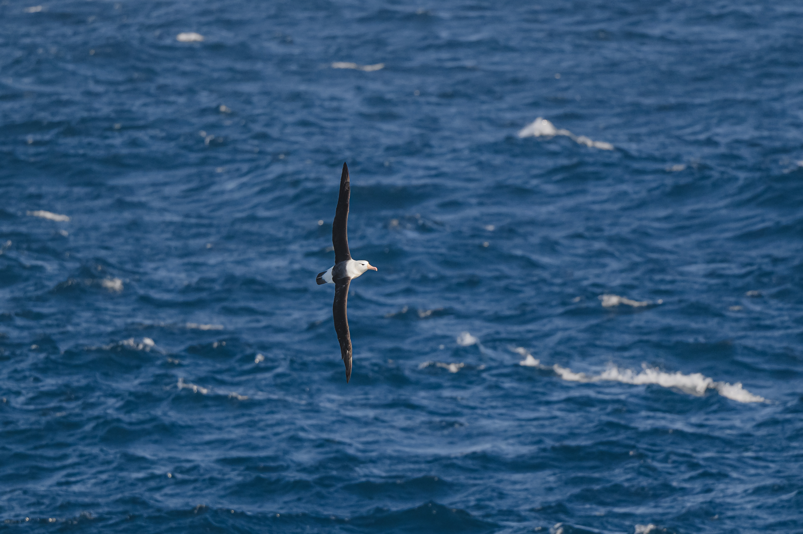
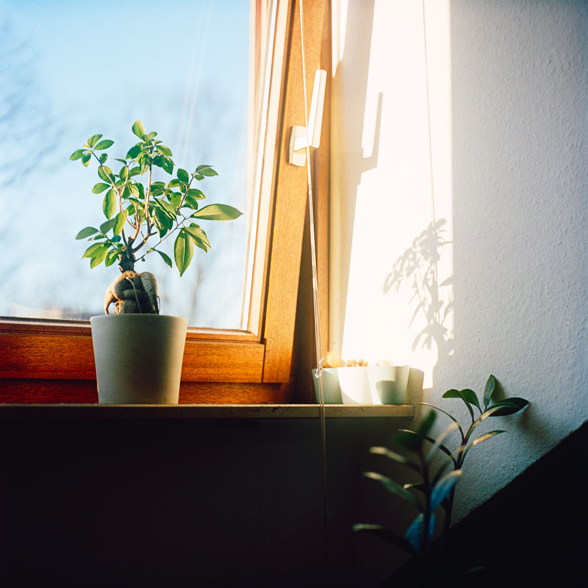

Zhehao Hu
Photography
Albums
Blue Marbles
Motion Picture
Color palette
Research
Posts
CV
Project
Expedition Fkt250220
About me
Categories
All
(15)
Community Ecology
(1)
Data Analysis
(1)
Ecology
(2)
Journal
(1)
Multivariate Analysis
(1)
Latest Updates
Feminized beetles
Altica lythri
with reproductive master manipulator
Wolbachia
Research Posts
I share here my notes and thoughts from course, event, workshop, conference related to my research.
Zhehao Hu

Blue Marble
This content is under protection of CC BY-NC-ND 4.0 license.
Albums
This content is under protection of CC BY-NC-ND 4.0 license.
Motion Picture
Ocean Census GoSouth: Searching for New Species in the South Sandwich Islands
On board the research vessel R/V
Falkor (too)
from Schmidt Ocean Institute, I am sailing as part of the Ocean Census taxonomist team. Our destination is the South Sandwich…
Zhehao Hu

Species Records
Species recorded during the South Sandwich Islands Expedition
Zhehao Hu
Albatrosses
旅をする心 (Traveling Heart)
Journal
I feel the time through my heart beats.
Feb 24, 2025
Zhehao Hu

Color palette
Yashica Mat-124G | Kodak Portra 160
Jan 18, 2025
Niche Overlap Analysis Using nicheROVER and Stable Isotope Data
Ecology
Community Ecology
Data Analysis
Multivariate Analysis
Sep 18, 2024
Zhehao Hu
Ecological Niche
Ecology
The total of the adaptations of an organismic unit.
Aug 27, 2024
Zhehao Hu
As a Biology Student
“I don’t know why I came. I just ended up here. And I am happy with it.”
Jul 27, 2024
Zhehao Hu
No matching items